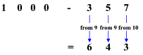
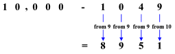

Alle von 9 und den letzten von 10
Um eine beliebige Zahl von 100, 1000, 10.000 etc zu subtrahieren gehe wie folgt for:
- Ziehe jede Ziffer der zu subtrahierenden Zahl von 9 ab
- Ziehe die letzte Ziffer der zu subtrahierenden Zahl von 10 ab
- Schreibe alle Ergebnisse hintereinander um das Resultat zu bekommen

